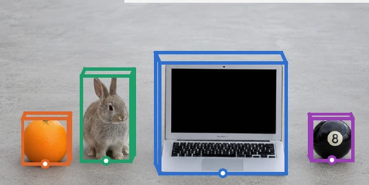
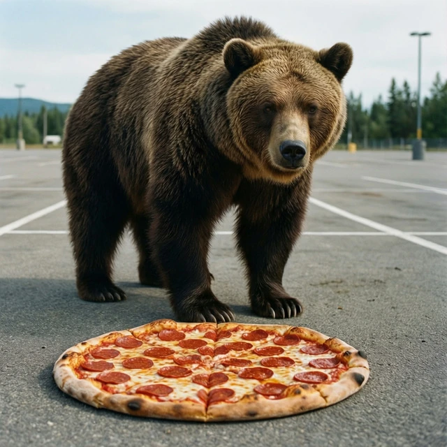
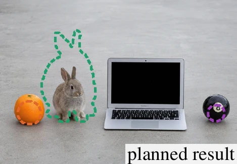
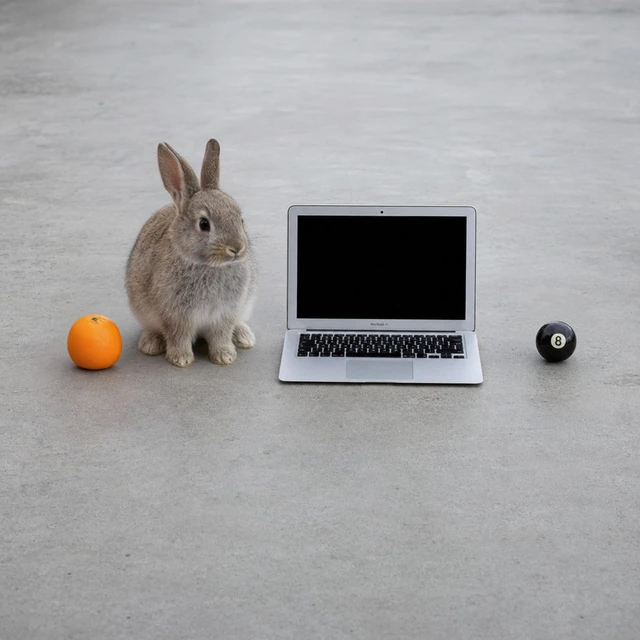
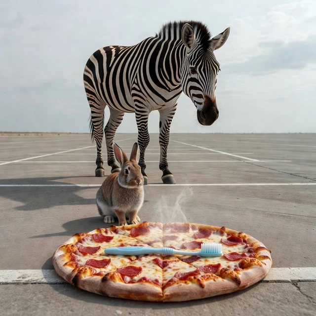
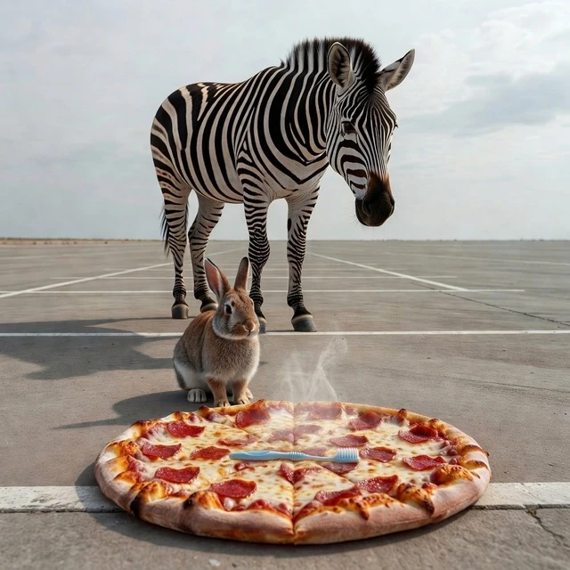
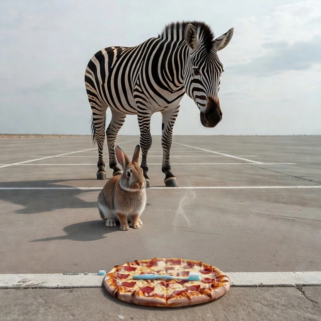

Measure the scene
The observer fits each object’s expected 3D dimensions to its visible outline. Here the rabbit is too small relative to the laptop.
1 Boston University 2 Creatify AI
How it works
Original PhyScale
PhyScaleA small object near the camera can occupy as many pixels as a large object farther away. PhyScale uses pose, depth and familiar object dimensions to decide what to resize and where it will fit.

The observer fits each object’s expected 3D dimensions to its visible outline. Here the rabbit is too small relative to the laptop.

The planner keeps the laptop fixed, enlarges the rabbit by 1.60× and shrinks the orange and 8-ball. It checks that each object fits and stays supported.

The editor shifts and scales object-token coordinates to follow the plan. Training on 2,468 paired 3D renders teaches it how contact, shadows and visibility change with the edit.
Generated images can appear photorealistic while depicting objects at implausible relative physical sizes. Correcting these errors requires distinguishing physical size from its depth- and pose-dependent appearance. We introduce PhyScale, a framework that formulates size correction as geometric inference and planning, separating physical-size changes from their image-space realization. Using typical real-world object dimensions from a knowledge base and estimated scene geometry, it computes size, depth, and placement commands for an image editor controlled through spatial rotary positional embeddings. To learn the associated appearance changes, we adapt the editor on only 2,468 paired renders from controlled 3D object transformations. The resulting editor outperforms prior geometry-aware editors in target fidelity and identity preservation on real-image edits. Combined with our geometric inference and planning front end, it matches a state-of-the-art VLM-based correction pipeline on GenScale at one-twentieth of the inference cost, and human raters prefer its corrections.
Across seven image generators, PhyScale matches ReScale’s average size error at about one-twentieth of its estimated inference cost.



Both methods see the same input. PhyScale makes the pizza smaller relative to the zebra.
Size error averages 8,001 object relations across 2,800 images. Cost and time are per-image means on 30 shared inputs. Lower is better for all three metrics.
GenScale benchmark ↗| Method | Size error | Est. cost | Time |
|---|---|---|---|
| Original | 0.910 | — | — |
| ReScale | 0.649 | $0.696 | 98.0 s |
| PhyScale | 0.640 | $0.037 | 52.8 s |
Five blinded raters compared 105 pairs on which the methods differed. For naturalness, 323 votes favored PhyScale, 44 favored ReScale and 158 rated them the same.
@misc{li2026physcale,
title = {{PhyScale}: Physically Grounded Object Size Correction in Text-to-Image Generation},
author = {Lingxiao Li and Ledell Wu and Boqing Gong},
year = {2026}
}